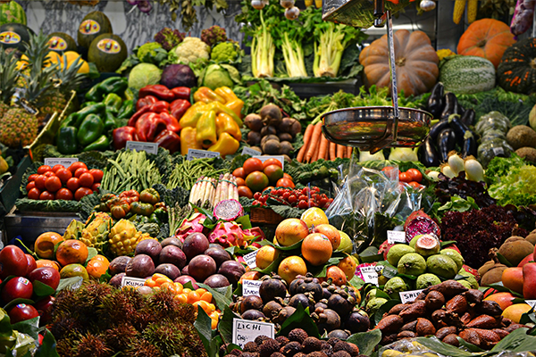
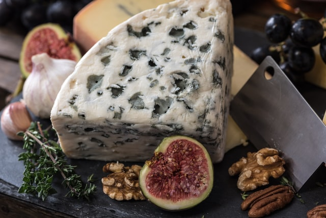
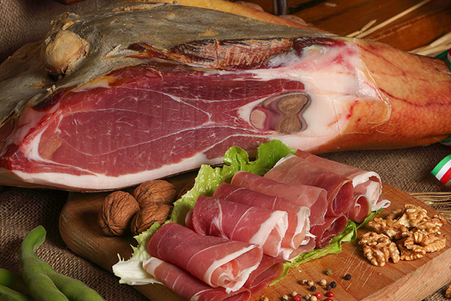
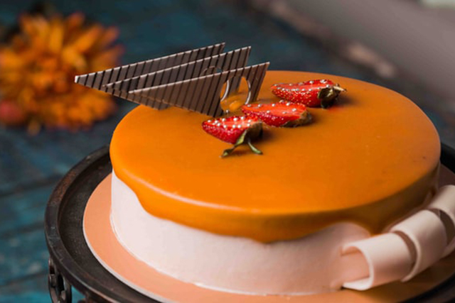

Frutta e Verdura
Raccolta ogni giorno con le mani da un campo o da un albero. Sa buona anche cotta, a volte. Attenti ai cavolfiori.

Macelleria
Abbiamo la passione per le carni bianche, rosse e rosate. I nostri animali mangiano solo cibo. Il nostro macellaio è diventato vegano.

Formaggi
Formaggi di ogni forma e colore, ogni tanto fanno anche puzza. Il latte delle nostre mucche è munto a mano quando non abbiamo molto da fare.

Salumeria
Raccolta ogni giorno con le mani da un campo o da un albero. Sa buona anche cotta, a volte. Attenti ai cavolfiori.

Panetteria
Raccolta ogni giorno con le mani da un campo o da un albero. Sa buona anche cotta, a volte. Attenti ai cavolfiori.

Dolci
Raccolta ogni giorno con le mani da un campo o da un albero. Sa buona anche cotta, a volte. Attenti ai cavolfiori.